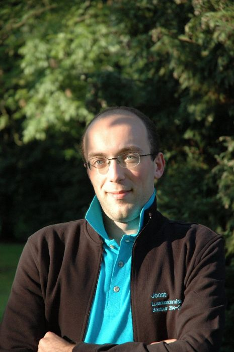

|  |
In 2002 kwam Joost als basklarinettist bij Quadrivium, maar al snel bleek hij ook besklarinet, saxofoon en fagot te kunnen spelen. Sinds 2003 is hij als commissaris lustrum al bezig met de voorbereiding van het lustrum. Dit jaar mag hij de mooie plannen werkelijkheid zien worden! Terug naar de groepsfoto |